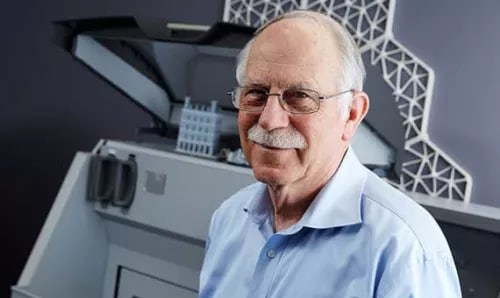
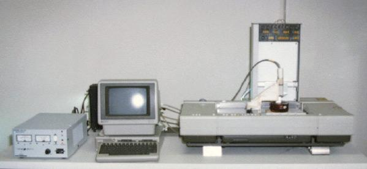

Історія розвитку 3D технологій розпочалася ще у другій половині XX століття, коли комп’ютерна графіка тільки починала формуватися як окрема галузь. Перші дослідження у сфері тривимірного зображення з’явилися у 1960–1970-х роках, коли були створені перші алгоритми рендерингу та візуалізації. Саме ці напрацювання заклали фундамент для появи сучасних методів моделювання й анімації.

Справжнім проривом стало 1983 року, коли американський інженер Чак Халл винайшов технологію стереолітографії (SLA) і запропонував термін «тривимірний друк». Він же створив перший у світі 3D-принтер та заснував компанію 3D Systems, що стала піонером у цій галузі. Стереолітографія дозволяла тверднути рідку смолу під дією лазера, утворюючи фізичні моделі з цифрових креслень.
У 1990-х роках активно розвиваються інші технології: FDM (Fused Deposition Modeling), SLS (Selective Laser Sintering), а також з’являються перші комерційні 3D-сканери. Саме в цей період 3D друк починає використовуватися у промисловості, авіабудуванні, автомобілебудуванні та медицині для створення ранніх прототипів.

На початку 2000-х років 3D технології стали доступнішими за рахунок зниження вартості обладнання та появи відкритих проєктів, таких як RepRap — перший у світі 3D-принтер, здатний друкувати частини самого себе. Це дало поштовх до масового поширення настільних 3D-принтерів та розвитку спільнот ентузіастів, що активно вдосконалювали технології.
Паралельно розвивається 3D-графіка: з’являються програмні продукти Autodesk Maya, Blender, 3ds Max, які забезпечують реалістичну візуалізацію, складні анімації й моделювання персонажів. Кінематограф починає активно використовувати CGI-технології, створюючи фільми з повністю тривимірними сценами та героями.
Сьогодні 3D технології охоплюють одразу кілька ключових напрямків: моделювання, друк, сканування, візуалізацію, симуляцію та анімацію. Вони використовуються у медицині для друку протезів та імплантів, у будівництві — для створення надрукованих будинків, в освіті — для візуалізації складних процесів, у виробництві — для швидкого прототипування і серійного виготовлення деталей. Розвиток біодруку, металевого друку і 4D технологій відкриває абсолютно нові можливості для науки, інженерії та гуманітарних сфер.
Еволюція 3D технологій триває і сьогодні: вони стають точнішими, швидшими, доступнішими та універсальнішими. Їхнє застосування вже виходить за межі традиційних галузей, змінюючи підходи до виробництва, медицини, дизайну та віртуальної реальності.